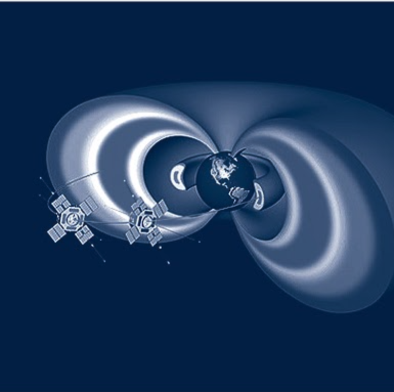

Artists
Click "*" to expand & contract
ALICIA ESCOTT
*
letter to a young virus covid-19
Alicia Escott is an interdisciplinary artist practicing in solidarity with thinkers across fields undoing the construct of “nature” as a thing separated from us and our world. Escott is interested in how we each are negotiating our immediate day-to-day realities and responsibilities amid an awareness of the overarching specter of climate change, mass-extinction and the subsequent unspoken individual and collective experience of loss, heartbreak and longing— and related social and political unrest. She approaches these issues with an interstitial practice that encompasses writing, drawing, painting, photography, video, sculpture, social-practice and activism.
In 2019 Escott was an Artist in Residence at at Recology and at The Growlery both in San Francisco, she has previously been a fellow at Djerassi Art Residency, Anderson Ranch Arts Center, the JB Blunk Artist Residency and Irving Street Projects. Her work has been shown in over 80 art institutions, galleries and alternative spaces— including exhibitions at the Headlands Center for the Arts, the Berkeley Arts Center, Yerba Buena Center for the Arts, the San Francisco Maritime Museum, The Berkley Art Museum and Pacific Film Archive, and The Museum of Contemporary Art Santa Barbra. She holds an MFA from California College of the Arts, where she received the Richard K. Price Scholarship and a BFA from the Art Institute of Chicago. Escott is a founding member of 100 Days Action and half of the Social Practice Project The Bureau of Linguistical Reality. Her work has been featured in the Economist, The new Yorker, KQED, MOMUS and many others
AMY BALKIN
*

Amy Balkin is an artist whose works address property relations, environmental justice, and equity in the context of climate change. Her projects and collaborations include A People's Archive of Sinking and Melting (Balkin, et al.), atmospheric "clean air" park Public Smog, and environmental justice audio tour Invisible-5 (Balkin/Stringfellow/Halbur, Greenaction and POND).. Her work has been exhibited in Fleeting Territories (Kunstraum Niederösterreich), Sublime (Centre Pompidou Metz), Hybris (MUSAC), Rights of Nature (Nottingham Contemporary), and dOCUMENTA (13), and published in Decolonizing Nature (Sternberg), Materiality (Whitechapel/MIT), Work of the Wind: Land, (K. Verlag), and Critical Landscapes (UC Press).
THE BUREAU OF LINGUISTICAL REALITY
*
The Bureau of Linguistical Reality is a participatory artwork by artists Heidi Quante and Alicia Escott working with the public to recognizing a collective loss for words to describe the emotions and experiences our species is having as our climate changes. Recognizing that just as new maps will need to be drawn, new experiences will likewise need to be codified in language to recognize or new collective realities. Asking “who has the agency to define the world around us— and the words we use to talk about it?” The Bureau thus creates a platform for people to identify feelings and experiences they do not have the language to describe and together coin neologisms to better discuss these. The Bureau is a process based social practice artwork that utilizes conversation, place-making and the facilitating of cross pollination between fields as a medium in itself. The Bureau sees the words created in this process as points of connectivity to further understanding, dialogue and conversations in the world about the ideas these words seek to codify.
Writing about The Bureau of Linguistical Reality has appeared in The New Yorker, The Economist, KQED, The San Francisco Chronical, Vice Magazine and the Huffington Post. The Bureau was the recipient of the Kindle Projects Makers Muse Award and its Mobile Field Office has traveled Nationally and Internationally including to Santa Barbra Museum of Contemporary Art, Berkeley Art Museum Pacific Film Archive (BAMFA), La Gaîté Lyrique in Paris, Blackwood Gallery at The University of Toronto in Canada, Southern Exposure in San Francisco and many others.
@TheBureauofLinguisticalReality (Instagram, this is their primary social media)
@BureauLR (twitter, which we check less often)
DELTA_ARK
*
KYTANA WINN
*
Born and bred Army Brat, I self-identify as being a loyal daughter, an eccentric sister, an old soul, and most importantly a creative just trying to consistently create.
In the spring of 2017, I graduated from Linfield College with a bachelor’s in Studio Arts & a minor in Art History. I am now living the post-grad life in Sacramento, CA. My first love is and will always be photography, but as of right now, my desire to explore the Black female body within relation to Afro-futuristic concepts has me dedicating my primary practice to paper/digital collage.
Explorations of Afrofuturism
It wasn’t until after I entered post-grad life and began re-evaluating my approach to my overall artistic practice, that I truly committed to the surprisingly inexpensive medium of collage. I had already been contemplating the ideas of The Divine Feminine in Space, Black feminism, future-past, and Pan African Diaspora identities after reading Yatasha Womack's Afrofuturism: The world of black sci-fi and fantasy culture . However, I didn't feel like my current medium, photography, could adequately address my new-found questions like, "What would a divine feminine in space look like? What if the Pan-African diaspora Identity was rooted in human cybernetic evolution?” "what does the reconstruction of the black female body in power inspire? With these questions and visual inspiration from artists Joshua Mays, Wangechi Mutu, Manzel Bowman, Taj Francis, and so many more notable artists, I have begun to philosophically and visually approach the wonderfully lush world of Afrofuturism within my work.
Currently I have been working through these ideas on both digital and canvas media. The individual images collected into a whole allow for a cohesive collage in which the the viewer can find meaning both through the singular and the whole. Almost similar to that of a mural. To reiterate the open-ended narratives within my compositions, I form the titles into short incomplete thoughts or sentences, Leading the reader through a stream of consciousness. These titles finish abruptly without a definite end, encouraging the viewer to find their ...
Portfolio Site
Contact
MALIK SENEFERU
*
ARTIST STATEMENT
Memories of my childhood play a tremendous role in my approach to creating art today. In my early years my mother a single parent lived in fear for my health due to the environmental hazards of San Francisco’s Hunters Point district. I suffered with asthma. Therefore, my innate interest to drawing and painting became that of a marriage over sports modeling my pursuit for constant spiritual mental and physical elevation. Having siblings among others as viewers of my work challenged me to go beyond my limitations. I remember my late grandmother a Barber and tailor sewing for hours at her machine after coming home from work. I would sit at her feet and draw on a paper bag with a pen, marker, crayon or a number two pencil.
Art is an absolute liberation of my imagination, a tool I use to communicate and share my “inner-light.” I have regular memories of my childhood working at the local super market, helping elders with their shopping bags. Receiving tips helping my grandmother in her barber shop by sweeping up the hairs to find money mysteriously hidden in large clumps. At the end of each service, those who knew me would say, “Keep up the good work and never stop doing your art.” From these experiences, I have learned the treasure of focusing on minuet details. Eventually, I realized in my artistic process that I too would hide treasures.
Living with this artistic expression is ritualistic in act and meditative in thought. Many times in the midst of creating, I experience dejavu. The realization of a single moment is obsolete only until it is captured by a memory of a stroke; a thought or pause for observation that I have discovered represents reincarnation of that tangible moment. Because of this, the very act of creating fine art is imparted with the relationship and responsibility I have with THE CREATOR. “The purpose of my existence.”
I also feel it is my duty as self taught artist to have an internal dialog with the viewer and in many cases the ancestors, where at this point I find inspiration for artistic expression. Fathering my child, serving my community, drumming, martial arts, poetry, philosophy and ancestral facts (history), all helps with the enhancement of my expression, to captures the Black, experience in America. I enjoy manipulating dry water-based paints, oil pastels, ink pen, found objects or assemblage. Book illustrations, portraiture, and public art projects have brought me closer to my community. The purpose of my compositions is to elevate the social, political, environmental and spiritual issues of people deeply challenged by oppression. This has been my greatest enrapture.
Kenya and Haiti are places for instance that influence the bold and dramatic colors in my works.
Henry Ossawa Tanner, Aaron Douglas, John Biggers and Jean-Michel Basquiat (to name a few) has inspired my artistic direction. Being an artist and growing up with-in low-income housing projects, surrounded by the early stages of Hip-Hop, had an immense impact on my ability to create freely. Although this bold life style of music, poetry, art, dance, and intense research today seems barbaric. It nevertheless has influenced me to be boundless in my creative efforts to deliver messages of empowerment to the indigenous peoples of the world.
Portfolio Site
Contact
THE
-
FUT
URE
-
EME
RGE
NT↗︎
-